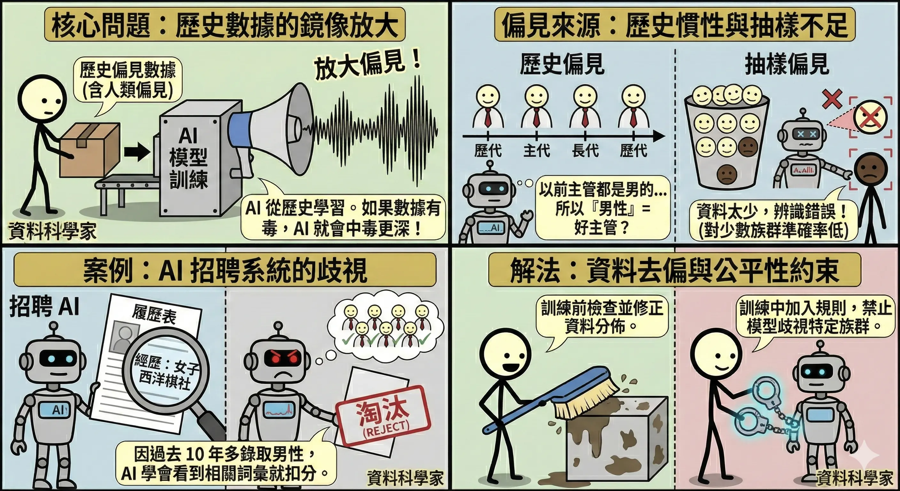
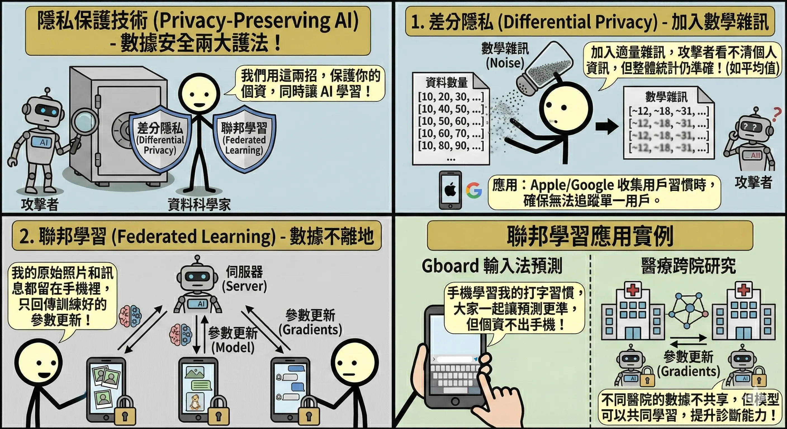
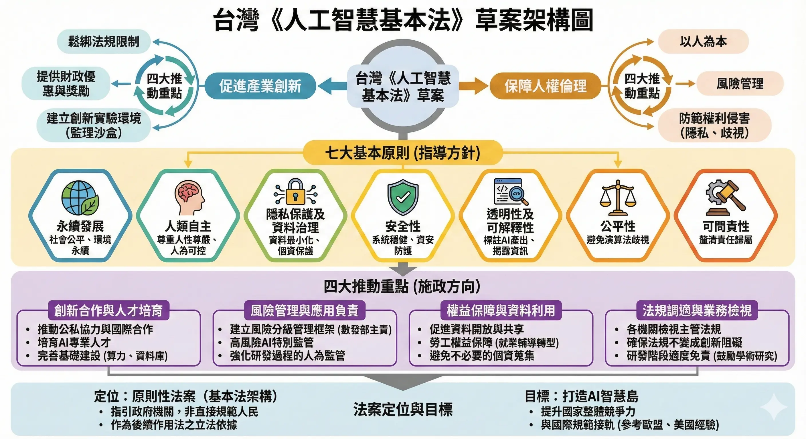
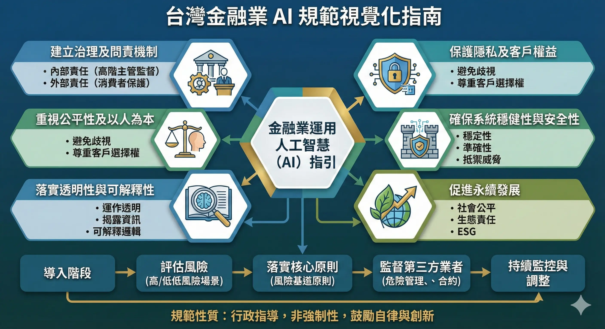
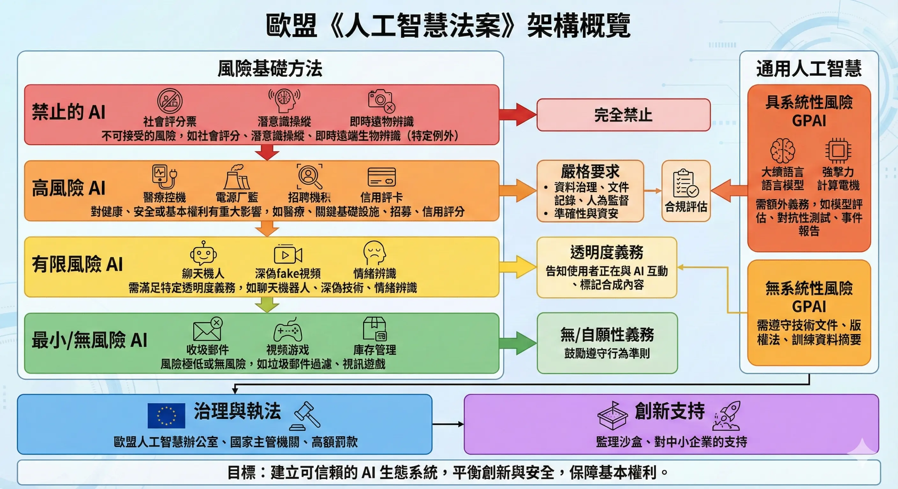
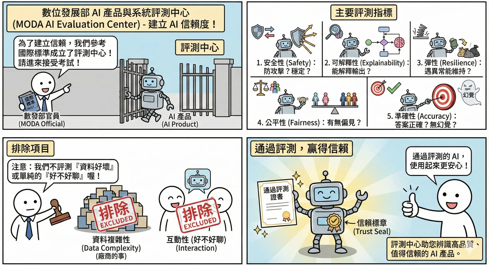

AI 治理、法規與倫理 (AI Governance, Regulations & Ethics)
AI 的強大能力伴隨著巨大的風險。如何確保 AI 是向善的 (AI for Good)，而不是帶來歧視、侵犯隱私或失控，是當前各國政府與企業最關注的議題。這不僅是道德問題，更是法律合規問題。
倫理原則與風險管理
公平性與偏見 (Bias & Fairness)
AI 模型是從歷史數據中學習的，如果歷史數據包含人類的偏見，AI 就會放大這些偏見。
- 偏見來源：
- 歷史偏見：例如過去主管多為男性，AI 學習後可能會認為「男性」是好主管的特徵。
- 抽樣偏見：訓練資料中某些族群樣本太少（例如人臉辨識對深色人種準確率較低）。
- 案例：Amazon 的 AI 招聘系統因為過去 10 年都錄取男性，學會了歧視女性履歷（看到 “Women’s Chess Club” 就扣分）。
- 解法：資料去偏 (Data Debiasing)。在訓練前檢查資料分佈，或在訓練中加入公平性約束 (Fairness Constraints)。

隱私保護技術 (Privacy-Preserving AI)
- 差分隱私 (Differential Privacy)：
- 概念：在資料中加入適量的數學雜訊 (Noise)，使得攻擊者無法反推出特定個人的資訊，但整體的統計特性（如平均值）仍然準確。
- 應用：Apple/Google 收集用戶使用習慣時，會加入雜訊，確保無法追蹤到單一用戶。
- 聯邦學習 (Federated Learning)：
- 核心概念：數據不離地 (Data stays local)。
- 運作流程：
- 下發模型：伺服器將通用的 AI 模型傳送到你的裝置（如手機）。
- 在地訓練：手機利用你的私密資料（如打字習慣、照片）在本地訓練模型，讓模型變聰明一點點。
- 上傳參數：手機只回傳訓練心得 (參數更新/梯度) 給伺服器，絕對不回傳原始資料。
- 整合更新：伺服器將成千上萬人的「心得」融合起來，更新成一個更強大的通用模型，再發送給大家。
- 類比：連鎖餐廳的新菜研發。
- 總部（伺服器）不把客人的食材（私密資料）收回來。
- 而是把食譜（模型）發給各地分店（手機）。
- 分店廚師試做後，回報「鹽要多加一點」（參數更新）。
- 總部修改食譜，發布新版本。
- 應用：Google Gboard 輸入法預測（不會上傳你打的字）、醫療跨院研究（醫院不能共享病患個資，但可以共享模型參數）。

責任歸屬與問責性 (Accountability)
- 當 AI 犯錯（如自駕車撞人、醫療 AI 誤診）時，誰該負責？是開發者、使用者，還是 AI 本身？
- 人機協作 (Human-in-the-loop)：目前的共識是，高風險決策（如醫療、司法）不能全交給 AI，必須有人類專家介入審核。最終決策權與責任仍在人類身上。
台灣與國際法規架構
台灣《人工智慧基本法》草案
- 定位：作為上位法，確立 AI 發展的基本原則（如以人為本、永續發展）。
- 重點機制：
- 監理沙盒 (Regulatory Sandbox)：為了鼓勵創新，允許企業在風險可控的範圍內測試新技術，暫時豁免部分法規限制。
- 風險分級管理：不一竿子打翻一船人，依據 AI 應用的風險程度，採取不同強度的管理。

台灣金融業 AI 規範
金融業因涉及金錢與個資，監管最嚴格。金管會發布了「金融業運用人工智慧之核心原則」。
金管會發布了「金融業運用人工智慧之核心原則」，共六大項。
記憶口訣：治平隱安透責 (治平專案隱藏透徹責任)
- 建立治理架構 (Governance)：
- 重點：董事會要負責。不能把 AI 當成單純的技術問題丟給 IT 部門，高層必須監督 AI 的使用策略與風險。
- 公平性 (Fairness)：
- 重點：不歧視。模型不能因為性別、種族等特徵而給予差別待遇（例如無故拒絕女性貸款）。需定期檢測模型偏見。
- 保護隱私及客戶權益 (Privacy)：
- 重點：最小化蒐集。只蒐集必要的資料，且必須妥善保管，不能未經同意就拿去訓練模型或賣給第三方。
- 系統安全性與強健性 (System Security)：
- 重點：防駭客。要防止對抗式攻擊（騙過 AI），並確保系統在突發狀況下（如資料異常）仍能穩定運作。
- 透明度與可解釋性 (Transparency & Explainability)：
- 重點：給理由。當 AI 做出對客戶有重大影響的決策（如拒保、拒貸）時，必須能解釋原因，不能只說「電腦算出來的」。
- 當責性 (Accountability)：
- 重點：有人扛。無論 AI 多聰明，最終的決策責任還是在人類身上。必須確保有申訴管道與補救機制。

歐盟《人工智慧法案》(EU AI Act)
全球第一部綜合性 AI 法規，採風險導向 (Risk-based approach)，影響力如同 GDPR：
- 不可接受風險 (Unacceptable Risk)：完全禁止。
- 社會信用評分 (Social Scoring)。
- 公共場所的即時遠端生物辨識（警察抓重犯除外）。
- 潛意識操縱（如用 AI 誘導兒童）。
- 高風險 (High Risk)：嚴格監管。
- 醫療器材、招聘系統、信用評分、關鍵基礎設施、邊境管制。
- 義務：必須通過合規評估 (Conformity Assessment)、使用高品質資料、保留紀錄、有人類監督。
- 有限風險 (Limited Risk)：透明度義務。
- Chatbot、Deepfake。
- 義務：必須明確告知使用者「你正在跟 AI 說話」或「這是生成的影像」。
- 最小風險 (Minimal Risk)：不監管。
- 垃圾郵件過濾器、電玩遊戲 AI。

AI 產品評測標準
數位發展部 AI 產品與系統評測中心
為了建立 AI 產品的信賴度，台灣成立了評測中心，參考國際標準（如 NIST）制定評測規範。
- 主要評測指標：
- 安全性 (Safety)：系統是否穩定？是否容易被攻擊（如 Prompt Injection）？
- 可解釋性 (Explainability)：能否解釋輸出結果？
- 彈性 (Resilience)：遇到異常輸入時，是否能維持運作？
- 公平性 (Fairness)：是否存在偏見？
- 準確性 (Accuracy)：答案是否正確？有無幻覺？
- 排除項目：目前的評測主要針對語言模型本身，不包含「資料複雜性」（資料好不好是廠商的事）或單純的「互動性」（好不好聊）。

本章總結與考點提示
核心概念回顧
AI 治理是確保 AI 永續發展的基石。
- 倫理風險：
- 偏見：歷史數據、抽樣偏差。解法：去偏。
- 隱私：差分隱私 (加雜訊)、聯邦學習 (數據不離地)。
- 當責：Human-in-the-loop (人機協作)。
- 法規架構：
- 歐盟 AI Act：風險導向 (禁止、高風險、有限、最小)。
- 台灣 AI 基本法：監理沙盒、風險分級。
- 金融業規範：公平、隱私、透明、當責。
AI 應用規劃師認證考點
常考題型與解題策略：
- 法規分級題 (EU AI Act)：
- 例題：「社會信用評分屬於哪一級風險？」
- 解答：不可接受風險 (禁止)。
- 例題：「招聘系統或醫療器材屬於哪一級？」
- 解答：高風險 (嚴格監管)。
- 例題：「聊天機器人屬於哪一級？」
- 解答：有限風險 (需揭露是 AI)。
- 隱私技術題：
- 例題：「希望多家醫院聯合訓練模型，但病歷不能出醫院，該用什麼技術？」
- 解答：聯邦學習 (Federated Learning)。
- 例題：「Apple 收集用戶數據時加入雜訊以保護隱私，這是什麼技術？」
- 解答：差分隱私 (Differential Privacy)。
- 倫理情境題：
- 例題：「AI 判斷履歷時，對女性分數較低，這是什麼問題？」
- 解答：偏見 (Bias)。
- 例題：「醫生使用 AI 輔助診斷，最後簽名負責的是誰？」
- 解答：醫生 (Human-in-the-loop)。
記憶口訣
- EU AI Act：「禁高限微」（禁止、高、有限、微小）。
- 聯邦學習：「資料不動模型動」。
- 差分隱私：「加點雜訊更安全」。
延伸思考
- 為什麼「監理沙盒」對 AI 新創很重要？（因為法規通常落後於科技，沙盒提供了一個合法的試錯空間，避免創新被舊法規扼殺）。